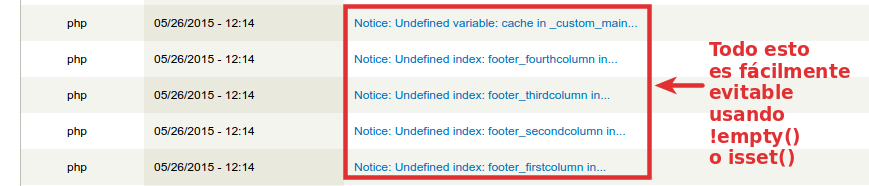

Buenas Prácticas de desarrollo en Drupal 7
John Herreño - Octubre de 2015
Basada en Buenas prácticas en desarrollos con Drupal 7, de Mariano D'Agostino.
Hola!
/about
John Herreño (jedihe), Ing. Electrónico, 6 años usando Drupal.
Sr. Drupal Developer @ Globant
Acquia Certified Developer - Backend Specialist
Introducción
¿Por qué molestarnos en aplicar buenas prácticas?
- Calidad
- Mantenibilidad
- Rotación de desarrolladores
- Actualizaciones
- Tú mismo en el futuro...
- Facilita contribuir a Drupal
Analizaremos tres etapas:
- Preparación del proyecto.
- Construcción + Desarrollo.
- Despliegue y mantenimiento.
Fase 1: Preparación
- Ambiente local y plataforma base.
- Estructura de directorios.
- Despliegue de cambios de configuración y actualizaciones.
- IDEs.
Ambiente local y plataforma base
- Usar Vagrant/Docker para el entorno local.
- Perfil de Drupal
- Drupal mínimo/estándar.
- Usar una distribución.
Buena Práctica: Crear nuestro propio perfil base
- Copiar y renombrar el perfil estándar.
- Permite tener un lugar unificado para escribir updates.
- Permite actualizar todo el núcleo de Drupal sin hackear el core.
Buena Práctica: Registrar los módulos usados en un archivo .make
- Documentación implícita de módulos + versiones (7.x-1.0, 7.x-2.x-beta-2, etc).
- Gestión ordenada de los parches aplicados.
- Automatiza descarga de módulos y bibliotecas (no sólo de drupal.org).
- Más info:
Buena Práctica: Separar los módulos custom de los contribuidos

- Definir de antemano los criterios para nombrar módulos.
- Prefijo de módulos propios: CLIENTE_
- Procurar un buen balance:
- Evitar que los módulos multi-propósito tengan demasiado código (10.000+ LDC).
- No crear módulos separados para cada pequeño ajuste.
Buena Práctica: Configuración y actualizaciones en código
- Utilizar Features o Configuration Management para hacer el seguimiento de cambios.
- Instalar/desinstalar módulos utilizando hook_update_N.
- Nunca* realizar cambios de forma manual en producción.
- Siempre probar los despliegues en un entorno alterno e idéntico* a producción.
*: hasta donde sea posible.
Buena Práctica: Gestionar configuración/customizaciones por entorno
- Usando hooks alter para modificar los features.
- Usando Features Override.
- Definiendo valores en el settings.php.
- Haciendo include a settings.$env.php.
- Provisionar settings.$env.php mediante Chef/Puppet.
- Más info: How to override features.
Buena Práctica: Configurar los IDEs y aplicar los Coding Standards
- Drupal tiene estándares de codificación bien definidos.
- Cada IDE o editor puede configurarse para respetar estas convenciones.
- Configurar un depurador y Coder.
function node_object_prepare($node) {
// Set up default values, if required.
$node_options = variable_get('node_options_' . $node->type, array('status', 'promote'));
// If this is a new node, fill in the default values.
if (!isset($node->nid) || isset($node->is_new)) {
foreach (array('status', 'promote', 'sticky') as $key) {
// Multistep node forms might have filled in something already.
if (!isset($node->$key)) {
$node->$key = (int) in_array($key, $node_options);
}
}
// ...
}
// ...
}Fase 2: Desarrollo
- ¿Cómo escoger módulos contribuidos?
- Temas pre-diseñados vs. custom.
- ¿Qué poner en features?, ¿qué implementar en módulos custom?
- Convenciones para nombrar componentes (features) y módulos propios.
- Buenas prácticas para el código propio.
¿Cómo elegir los módulos contribuidos?
- Los módulos estables1 son más seguros, pues son revisados por el equipo de seguridad.
- Pero a veces están muy desactualizados!
1: beta no cuenta como estable.
¿Y con respecto a los themes?
- Omega y Zen son muy buenas opciones. Siempre crear un subtema.
- Usar las características de SASS que tienen incluidas.
- Evitar temas pre-fabricados, incluso si se ven parecidos al diseño que buscamos.
- No implementar lógica en tpl's.
- JavaScript: usar behaviors.
- Tip: usar CSS Watch para refrescar estilos (similar a LiveReload).
¿Cómo organizar los features?
- Criterios de agrupación comunes:
- Tipo de Contenido
- Funcionalidad
- Los permisos y las configuraciones globales (pathauto, wysiwyg, etc) pueden agruparse todas en un mismo feature.
- Instalar Role Export lo antes posible.
- Preferir controles de acceso basados en permisos en lugar de roles1 (ej. Views).
- Evitar tener cientos de features, considerar el impacto en el rendimiento.
1: El problema son los ids numéricos, que no son fáciles de replicar entre ambientes.
¿Cómo nombrar los componentes?
Atención! No descuidar los nombres de los componentes!
- Mantener consistencia entre Tipos de Contenido, Vistas, nombres de campos, variables.
- Evitar los nombres predeterminados como page_1, block_1, content_pane_1.
¿Cómo nombrar los componentes?
- Completar las descripciones para los tipos de contenido y las vistas. Otros desarrolladores (que pueden no haber trabajado en este proyecto antes) van a agradecer este esfuerzo en el futuro.
¿Cómo nombrar los componentes?
Sugerencias para nombres de campos
- Campos de uso exclusivo: field_CONTENT_TYPE_* (ej. field_article_author_name)
- Campos compartidos: field_* (ej. field_image)
- Entity Reference: field_ref_* (ej. field_ref_clients)*
- Field Collection: field_col_* (ej. field_col_album_items)*
Máximo permitido de 32 caracteres para el nombre del campo (incl. field_). Usar nombres en Inglés.
Lo importante no es seguir una convención en particular, sino tener coherencia en todo el desarrollo.
* sólo aplica a los campos de tipo entity reference y field collection por tratarse de campos "especiales".
Consecuencias de malos nombres o nombres genéricos
Si evitamos definir los nombres correctamente terminamos creando código como este:
/**
* Implements hook_views_query_alter().
*/
function mimodulo_views_query_alter(&$view, &$query) {
if ($view->name == 'noticias' && $view->display == 'page_1') {
// Stuff
}
if ($view->name == 'noticias' && $view->display == 'page_2') {
// Stuff
}
if ($view->name == 'noticias' && $view->display == 'block_1') {
// Stuff
}
}Buenas prácticas generales a la hora de escribir código
- Aplicar los coding standards.
- Nombrar correctamente los módulos, variables y funciones. Ver https://www.drupal.org/node/299070.
- No modificar las tablas de otros módulos salvo que se sepa lo que se está haciendo.
- Aprender para qué sirven los hook_install, hook_update_N.
- Usar las APIs de Drupal: Form API, Cache API, Database API, Menu API, y otras APIs.
- Hay muchos ejemplos útiles en el módulo Examples.
- Idioma/Multi-idioma:
- Siempre definir el idioma del sitio.
- Todo texto visible al usuario (ej. etiquetas) debe definirse en inglés y traducirse.
- Implementar formatos de fecha localizables y usar format_date().
- Usar t() con los placeholders correctos (@, %, !).
Buenas prácticas generales a la hora de escribir código
Escribir código seguro!
- SQL Injection: usar bien el Database API.
- XSS: check_plain(), filter_xss() o filter_xss_admin().
- CSRF: Usar tokens o formularios de confirmación.
- Cuidado con el estado global!: $user. Ver Safely Impersonating Another User.
function quiero_ser_hackeado() {
global $user;
$user = user_load(1);
}Buenas prácticas generales a la hora de escribir código
- Los archivos .module deberían tener sólo implementaciones de hooks. Agregar siempre el docblock correspondiente:
- Tip: usar drush fnh.
- Crear un módulo con funciones utilitarias: Ej. CLIENTE_get_extra_user_info($uid);
- JavaScript:
- Preferir #attached a drupal_add_js(). Usar behaviors.
- No poner <script></script> tags en los templates.
Buenas prácticas generales a la hora de escribir código
- ¿Quieres escribir código OO?, revisa X Autoload y Composer Manager.
- Para las bibliotecas externas (tanto PHP como JavaScript) usar el módulo Libraries y configurar el directorio sites/all/libraries.
- Depurar sin Xdebug: usar el módulo Devel, en particular las funciones
dpm()ydsm().- Nunca habilitar devel en producción.
- Tip: usar DevelMailLog para depurar correo.
Buenas prácticas generales a la hora de escribir código
- Incluir un README.txt en cada módulo custom explicando su razón de ser.
- Escribir código eficiente: https://www.drupal.org/node/328206
- Aplicar patrones para la UI en Drupal: https://www.drupal.org/node/1087090
- PHP: Configurar error_reporting = E_ALL. Corregir todos los errores reportados.
- Tip: usar
!empty()oisset().

- Tip: usar
Buenas prácticas generales a la hora de escribir código
No reinventar la rueda
Drupal tiene muchos módulos genéricos para resolver problemas comunes.
- Flag API para interacciones entre Usuarios y Entidades.
- Message API para intercambiar mensajes entre usuarios.
- Organic Groups API para intercambiar grupos privados y públicos.
- Voting API para votaciones.
Todos los módulos anteriores proveen formas de ser extendidos, muchos de ellos permiten agregar campos a las entidades que proveen.
Fase 3: Despliegue y mantenimiento
- Configurar el Cron.
- Deshabilitar el reporte de errores y el módulo Update.
- Configurar backups automatizados de la DB.
- Ofrecer un contrato de mantenimiento.
Buenas prácticas antes de poner el sitio en producción.
Configurar el Cron
- El cron limpia tablas de caché importantes.
- ¿Problemas de rendimiento?, evaluar Elysia cron.
- Desactivar el cron predeterminado de Drupal. (Correrlo usando cronjobs)
Buenas prácticas antes de poner el sitio en producción.
- Deshabilitar los reportes de errores.
- Incluso si se deshabilitan los errores al usuario, watchdog sigue siendo invocado.
- Hay alternativas a dblog como syslog. (Usa el filesystem en lugar de la DB).
- Deshabilitar el módulo Update.
Buenas prácticas antes de poner el sitio en producción.
Configurar backups automatizados de la DB.
Al menos uno por semana*, insistir en las ventajas de este método con el cliente.
Ofrecer un contrato de mantenimiento.
Muchos problemas con el Drupalgeddon https://www.drupal.org/PSA-2014-003 podrían haber sido fácilmente solucionados con un simple parche en tiempo y forma.
* cada proyecto debe analizarse para establecer una frecuencia óptima.
¿Y si no lo hago...?
Druplicon finds your unobservance of good practices disturbing...
Veo... features gigantes...
80k+ líneas de código!
Los verdaderos machos escriben sus propios exportadores a XLS
Se debe poder hacer con Views + Views Data Export
Gracias! ¿preguntas?
- Más info:
Contacto
- John Herreño (jedihe)
- john.herreno@globant.com
- jedihe@gmail.com
Basada en Buenas prácticas en desarrollos con Drupal 7, de Mariano D'Agostino.